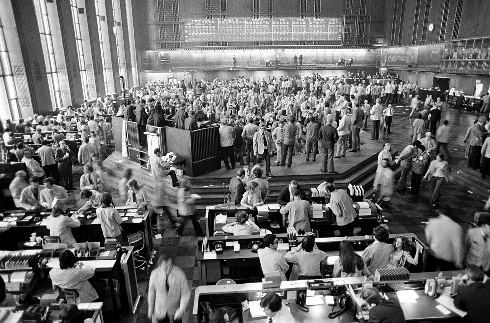
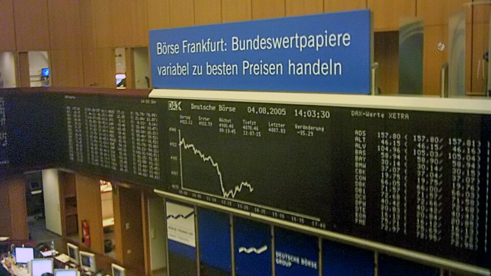

2. De la finance au trading
🟢 · Débutant
Ce que tu sauras faire
- Comprendre pourquoi les marchés existent, et situer le trading dans la finance.
- Distinguer les grands marchés et les produits qu'on y échange : spot, CFD, futures, options.
- Comprendre ce qui relie les marchés entre eux, et ce qui fait bouger leurs prix.
- Savoir ce qu'un trader essaie d'y faire.
2.1 À quoi sert la finance ?
Une entreprise veut ouvrir une usine. Elle a besoin d'argent aujourd'hui, alors que les revenus de l'usine arriveront plus tard. Elle peut emprunter, ou vendre une part de son capital à des investisseurs.
La finance sert notamment à ça : faire circuler l'argent entre ceux qui en ont et ceux qui en ont besoin. Elle permet aussi d'épargner, de payer, et de transférer certains risques. Les marchés financiers sont les lieux où l'on échange des titres comme les actions et les obligations.
Une action = une part d'entreprise. Une obligation = une dette : l'acheteur prête de l'argent à l'émetteur, qui s'engage à le rembourser selon des conditions fixées à l'avance.
- 01Épargnant
Il dispose d’argent qu’il souhaite placer.
- 02Financement
L’entreprise emprunte ou vend une part de son capital.
- 03Projet
Elle ouvre son usine. Projet solide ou fragile : c’est de là que vient une bonne partie du risque.
- 04Retour espéré
Intérêts, dividendes ou plus-value : un projet plus risqué doit promettre plus.
Pourquoi quelqu'un achète ces titres ? Pour obtenir quelque chose en retour : des dividendes, des intérêts, ou un prix de revente plus élevé. Il accepte un risque parce qu'il espère être rémunéré pour ce risque. Et ce risque dépend en partie de la qualité du projet : une usine bien gérée, sur un marché solide, a plus de chances de rembourser et de rapporter qu'un projet fragile. C'est pour ça qu'un projet risqué doit promettre plus pour trouver de l'argent.
Mais attention au « tout le monde veut du profit ». Oui, c'est le moteur de l'investisseur. Pour autant, tous les ordres sur un marché ne viennent pas d'un investisseur qui parie sur la hausse. Une compagnie aérienne peut se couvrir contre la hausse du pétrole ; un fonds peut vendre pour réduire son risque ; un autre peut avoir besoin de liquidités. Même marché, raisons différentes.
2.2 Le trading n'est qu'une fraction de la finance
Quand on débute, on croit souvent que la finance, c'est des graphiques et des traders. En réalité, c'est un immense univers, et le trading en est un petit morceau.
La finance, c'est quatre grands métiers :
- la finance d'entreprise : trouver l'argent des projets ; une entreprise vend des actions, émet des obligations, en rachète une autre. Ce sont les banques d'affaires et les directeurs financiers ;
- la banque et l'assurance : prêter, garder l'épargne, faire circuler les paiements, assurer ta voiture ou ta maison, puis placer cet argent ;
- les banques centrales : fixer le prix de l'argent (les taux directeurs) et veiller sur la monnaie ;
- la finance de marché : échanger les titres et les contrats déjà émis, chaque jour, sur les marchés.
On distingue aussi deux échelles. La micro, c'est une entreprise, un ménage, un projet : est-ce que cette usine sera rentable ? La macro, c'est l'économie entière : la croissance, l'inflation, les taux. Les banques centrales travaillent sur la macro ; une entreprise, sur sa micro. Les marchés, eux, mélangent les deux : le prix d'une action dépend des résultats de l'entreprise, et aussi des taux.
Et sur les marchés, qui fait quoi ? Quatre raisons d'acheter ou de vendre :
- l'investisseur place de l'argent sur des années (fonds de pension, assureurs, épargnants) ;
- le couvreur se protège contre un prix : la compagnie aérienne contre la hausse du pétrole, l'exportateur contre la baisse du dollar ;
- le teneur de marché affiche en permanence un prix d'achat et un prix de vente, et gagne sur l'écart ;
- le spéculateur, enfin, cherche à profiter d'un mouvement de prix. C'est lui, le trader.
Une branche parmi quatre, un acteur parmi quatre : le trader spéculatif est une petite case de la finance.
- 01Quatre métiers
Financer les entreprises, prêter et assurer, gérer la monnaie, échanger sur les marchés.
- 02Micro et macro
Micro : une entreprise, un ménage. Macro : l'économie entière. Les marchés mélangent les deux.
- 03Qui fait quoi
Sur les marchés : l'investisseur, le couvreur, le teneur de marché, le spéculateur.
- 04Le trader
Le spéculateur : un acteur parmi quatre, dans une branche parmi quatre.

Pourquoi c'est important ? Parce que la plupart des gens en face de toi ne jouent pas au même jeu que toi. Ils n'ont pas le même horizon, ni le même objectif, ni les mêmes contraintes. Et c'est justement ce qui crée des mouvements exploitables.
2.3 Pourquoi les prix bougent-ils ?
Imagine que tu veux acheter une maison. Tu regardes son prix, mais aussi les taux du crédit, tes revenus futurs et ce que tu pourrais acheter à la place. Les investisseurs font pareil à une autre échelle.
Un prix reflète ce que les acheteurs et les vendeurs sont prêts à accepter maintenant, compte tenu de ce qu'ils pensent de l'avenir. Si une nouvelle information change leurs attentes, ils réévaluent ce prix. Les transactions se font toujours entre un acheteur et un vendeur ; le prix se déplace quand l'un des deux camps doit accepter de moins bonnes conditions pour trouver une contrepartie.
2.4 Les grands marchés
Cinq grandes familles, que tu croiseras partout :
| Marché | Ce qu'on y échange | Qui y est | Ce que tu peux trader |
|---|---|---|---|
| Actions et indices | Des parts d'entreprises ; un indice (S&P 500, Nasdaq 100, CAC 40) résume un panier d'actions | Épargnants, fonds, entreprises qui rachètent leurs actions | Les actions, et les indices via ES (S&P 500) ou NQ (Nasdaq 100) |
| Taux et obligations | Des dettes d'États et d'entreprises ; leur rendement = le taux | Banques, assureurs, fonds de pension, banques centrales | Les futures sur obligations (ZN, ZB) |
| Devises (Forex) | Une monnaie contre une autre : euro contre dollar, etc. | Banques, entreprises qui commercent à l'étranger, banques centrales | Les paires (EUR/USD) ou leur future (6E) |
| Matières premières | Pétrole, or, gaz, blé, cuivre… | Producteurs, industriels, compagnies aériennes, fonds | CL (pétrole), GC (or) |
| Cryptos | Bitcoin, Ether… | Particuliers, fonds, quelques entreprises | Le spot, ou les futures (BTC) |
Un indice comme le S&P 500 résume la performance de 500 grandes entreprises américaines ; il ne représente pas à lui seul toute l'économie.
Ces marchés n'ont pas du tout la même taille. Le marché des changes (le Forex), par exemple, échange chaque jour des montants qui dépassent de loin tout le reste ; et le marché des obligations est plus gros que celui des actions, alors qu'on en parle beaucoup moins.
- 01Encours
Actions mondiales : 169 000 Md$ (fin août 2026, WFE). Obligations mondiales : 160 700 Md$ (2025, SIFMA).
- 02Dérivés de gré à gré
844 578 Md$ d'encours notionnel (fin 2025, BIS). Le notionnel n'est pas l'argent réellement en jeu.
- 03Échangé chaque jour
Changes (Forex) : 9 510 Md$ par jour (avril 2025, BIS).
- 04E-mini S&P 500
394 Md$ par jour (moyenne 2024, CME).
2.5 Les marchés se parlent
Ces marchés ne vivent pas chacun dans leur coin. Une nouvelle qui touche l'un se propage aux autres. Le plus simple est de partir d'un exemple précis, et de suivre le fil.
L'exemple : l'inflation américaine sort plus haut que prévu.
- Les obligations, donc les taux. Le marché se dit que la Fed va garder ses taux hauts plus longtemps. Les obligations déjà émises, qui rapportent moins que les nouvelles, perdent de la valeur : leur prix baisse, leur taux monte.
- Le Forex, avec le dollar. Placer son argent en dollars rapporte plus qu'avant. Des investisseurs achètent du dollar : il monte souvent face à l'euro, donc l'EUR/USD baisse.
- Les matières premières, avec l'or. L'or ne rapporte aucun intérêt, et il se paie en dollars. Des taux plus hauts et un dollar plus fort le rendent moins attirant : il baisse souvent.
- Les actions. Emprunter coûte plus cher, et les bénéfices attendus loin dans le futur valent moins aujourd'hui : la tech, donc le Nasdaq, souffre souvent la première.
- 01L'exemple
L'inflation américaine sort plus haut que prévu.
- 02Obligations
La Fed pourrait garder ses taux hauts : le taux des obligations monte.
- 03Forex et or
Placer en dollars rapporte plus : le dollar monte souvent. L'or, qui ne rapporte rien et se paie en dollars, baisse souvent.
- 04Et si… ?
Et si c'était attendu ? Et si la peur pousse vers l'or refuge ? Souvent, pas toujours.
Maintenant, imagine la suite. Et si ce chiffre était déjà attendu ? Le marché bouge à peine. Et si la peur domine, parce que l'inflation fait craindre une récession ? L'or peut monter quand même, comme valeur refuge. Et si c'est le pétrole qui a fait monter l'inflation ? Les pays producteurs, leurs devises, les compagnies aériennes : chaque marché a sa propre lecture de la même nouvelle.
Ce sont des tendances, pas des lois. Ces liens se renforcent, s'affaiblissent, et parfois s'inversent selon le contexte. Ils servent à comprendre, pas à prédire.
Ce qu'ils ont tous en commun. Quel que soit le marché, on retrouve la même mécanique : 1 achat = 1 vente, une enchère qui cherche un prix accepté par les deux camps, de la liquidité plus ou moins épaisse selon l'heure, et des acteurs aux objectifs différents. Ce que tu apprendras en partie 3 sur le pétrole marche sur l'euro, sur l'or et sur le Nasdaq.
2.6 Les produits : comment tu y accèdes
Sur un même marché, il existe plusieurs façons de prendre position. Ce sont les produits financiers.
- Le spot (au comptant) = tu achètes l'actif lui-même, livré tout de suite : une action, un bitcoin, des euros. Il t'appartient.
- Le CFD (contract for difference) = un contrat passé avec ton courtier sur la différence de prix entre ton entrée et ta sortie. Tu ne possèdes rien ; tu paries sur l'écart. Le courtier est souvent ta contrepartie, et le levier est élevé. Interdit aux particuliers aux États-Unis, encadré en Europe, où les courtiers doivent afficher la part de clients qui perdent de l'argent ; elle est généralement très majoritaire.
- Le future (contrat à terme) = un engagement standardisé à acheter ou vendre une quantité fixée d'un actif, à une date fixée, à un prix fixé aujourd'hui. Il s'échange sur une bourse (le CME, à Chicago, pour l'ES, le NQ, le CL, le GC, le 6E), avec une chambre de compensation au milieu. Tout le monde voit le même carnet et le même volume. C'est ce que tradent la plupart des traders d'orderflow, et les prop firms.
- L'option = un contrat qui donne le droit, sans l'obligation, d'acheter ou de vendre un actif à un prix fixé, jusqu'à une date fixée. On y revient en partie 5.
| Spot | CFD | Future | Option | |
|---|---|---|---|---|
| Tu possèdes l'actif ? | Oui | Non | Non (sauf livraison) | Non |
| Où ça s'échange | Bourse ou plateforme | Chez ton courtier | Sur une bourse | Sur une bourse (surtout) |
| Volume réel visible | Selon le marché | Non | Oui | Oui |
| Échéance | Aucune | Aucune | Oui | Oui |
| Ce que tu risques | Ta mise | Plus que ta mise, avec le levier | Plus que ta mise, avec le levier | Acheteur : la prime |
Le levier, c'est contrôler une grosse position avec peu d'argent déposé. Il multiplie les gains, et les pertes, dans la même proportion.
Pour l'orderflow, le future a un gros avantage : le volume que tu vois est le vrai volume de tout le marché, centralisé sur une bourse. Sur un CFD, tu ne vois que ce que ton courtier te montre.
2.7 La macro, en version simple
La macroéconomie regarde l'économie dans son ensemble : la croissance, l'emploi, l'inflation et les taux d'intérêt. Pour un trader, l'intérêt n'est pas de réciter des chiffres. C'est de comprendre comment une nouvelle peut modifier les attentes des autres acteurs.
Reprends l'exemple de l'inflation. Le chiffre seul ne fait rien bouger. Ce qui fait bouger, c'est ce qu'il change dans la tête des acteurs : des taux hauts plus longtemps, donc d'autres placements, donc d'autres ordres.
La chaîne à retenir : une information → des attentes qui changent → des décisions d'achat ou de vente → des prix qui bougent.
- 01Nouvelle
L’inflation publiée dépasse les attentes.
- 02Anticipations
Certains acteurs envisagent des taux élevés plus longtemps.
- 03Décisions
Ils réévaluent leurs placements et passent des ordres.
- 04Prix
Les cours peuvent bouger ; la réaction n’est jamais automatique.

Ce n'est pas une règle automatique. Si le chiffre était déjà attendu, le marché peut à peine réagir. Et une même nouvelle peut être interprétée différemment selon le contexte. La question utile est donc : qu'est-ce qui a changé par rapport à ce que le marché attendait ?
Les rendez-vous qui comptent le plus, pour commencer : l'inflation (CPI), l'emploi américain (NFP, le premier vendredi du mois), et les décisions de taux de la Fed. Un calendrier économique gratuit te les donne, avec la valeur attendue et la valeur publiée.
2.8 Et le trading, dans tout ça ?
Investir, c'est placer de l'argent dans un actif avec l'idée d'en tirer un rendement, souvent sur une longue durée. Trader, c'est prendre puis gérer une position sur un marché afin de profiter d'un mouvement de prix. La durée peut aller de quelques minutes à plusieurs mois. On peut chercher à profiter d'une hausse, ou d'une baisse avec les produits adaptés (vendre un future, par exemple).
Le trader ne finance généralement pas directement une entreprise quand il achète un titre déjà en circulation. Il échange avec d'autres acteurs sur un marché. Son travail consiste à formuler un scénario, choisir où intervenir, définir ce qu'il risque et vérifier si l'opportunité vaut ce risque.
Exemple : tu penses qu'une annonce va peser sur les actions américaines. C'est une idée de contexte, pas encore un trade. Il te faut un marché précis, un prix d'entrée, une condition qui invalide ton idée et une sortie possible. Si le prix ne confirme pas ton scénario, tu peux simplement ne rien faire.
- 01Contexte
Une annonce pourrait peser sur les actions.
- 02Marché et niveau
Quel instrument et à quel prix intervenir ?
- 03Risque
Qu’est-ce qui invalide l’idée et combien peut-on perdre ?
- 04Décision
Agir si les conditions sont réunies ; sinon attendre.
Comprendre la macro aide donc à répondre au pourquoi. Observer les prix et les échanges aide à répondre au quand et au où.
Erreurs fréquentes :
- Croire que la finance, c'est le trading. Le trader spéculatif est un acteur parmi beaucoup d'autres, et pas le plus gros.
- Croire qu'une bonne nouvelle fait toujours monter le marché. Ce qui compte, c'est aussi ce qui était déjà anticipé.
- Imaginer que chaque achat exprime une conviction haussière. Les acteurs n'ont ni le même objectif ni le même horizon.
- Prendre les liens entre marchés pour des lois. Obligations, Forex, or : ce sont des tendances, qui changent avec le contexte.
- Choisir un produit sans savoir ce qu'il est. Un CFD n'est pas un future : pas le même volume, pas la même contrepartie.
- Oublier que le levier marche dans les deux sens.
- Confondre une explication économique convaincante avec une occasion de trading. Une idée doit encore être traduite en décision et en risque précis.
Transition vers la partie suivante
Tu sais maintenant pourquoi les prix bougent : une information change les attentes, les attentes changent les décisions, et les décisions deviennent des ordres.
Reste le comment. Un ordre, concrètement, qu'est-ce qu'il fait au prix ? Pourquoi le prix monte d'un cran, et pas de dix ? Pourquoi il s'arrête à un endroit plutôt qu'à un autre ?
C'est la partie 3 : la mécanique des prix. On quitte la macro, le pourquoi, pour le quand et le où ; ce qui se passe réellement dans une bougie.